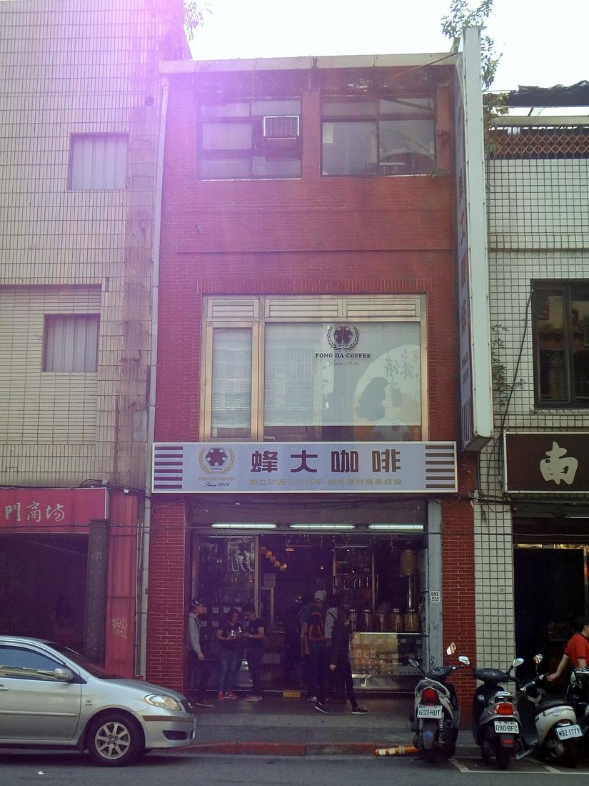
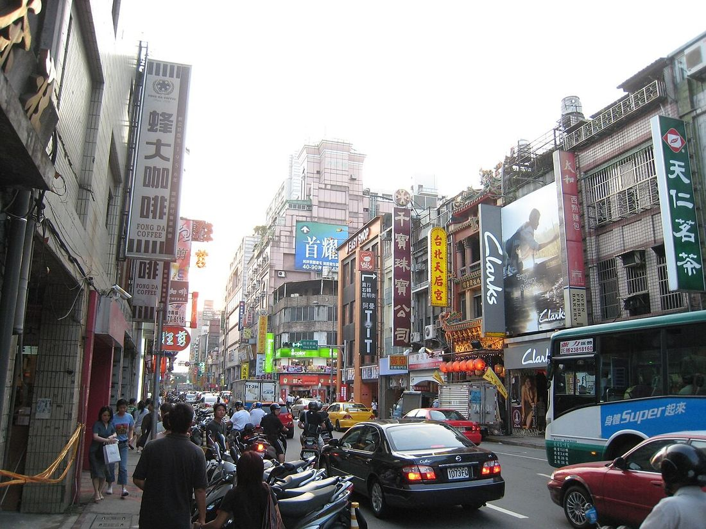
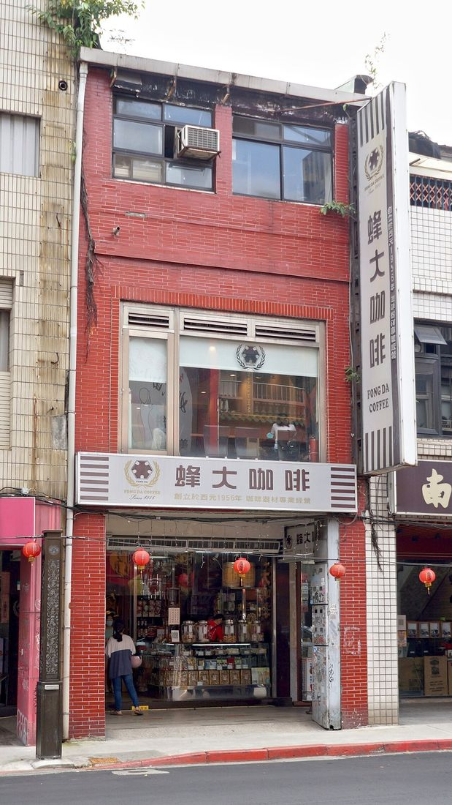

台北老店．西門町
蜂大咖啡：從賣蜂蜜開始的老店
西門町這家咖啡館，名字裡有個「蜂」字，因為它一開始是賣蜂蜜的。

成都路 42 號的蜂大咖啡，一九五六年開在西門町，到今天快七十年，門口常常排隊。
從蜂蜜大王到蜂大咖啡
原本叫「蜂蜜大王」，只賣蜂蜜。後來加賣紅茶和咖啡，名字改成蜂大咖啡。
一台用了六十多年的德國烘豆機
店裡那台德國烘豆機，從開店用到現在。想要酸一點、苦一點、還是炭燒味，老闆都能照你的口味配豆。
冰咖啡和合桃酥
有報導說，蜂大是台灣最早賣冰咖啡的店。門口一排大玻璃罐裝著手工合桃酥，很多人是為它來的。二樓以前還有情人雅座，是當年的約會地點。
專業點：冰滴咖啡怎麼滴
冰滴是讓冷水一滴一滴慢慢穿過咖啡粉，理想速度大約 1.5 秒一滴，要滴 3 到 12 個小時。有報導寫過，蜂大的冰滴壺有一公尺高，六個小時只滴得出四杯。
老照片與街景



店家資訊
- 店家
- 蜂大咖啡
- 地點
- 台北市萬華區成都路 42 號
- 現況
- 營業中
- 營業時間
- 常有變動，出發前請再確認
- IG 影片
- 12/8 上片
你去蜂大都點什麼？咖啡派還是合桃酥派？留言告訴我們
到 IG 留言告訴我們
到 IG 留言告訴我們